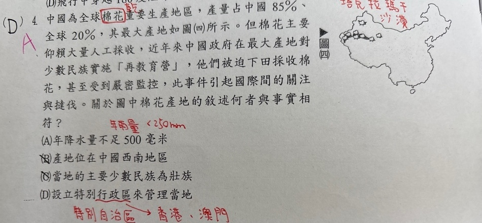
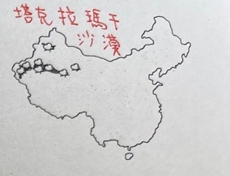

中國為全球棉花重要生產地區，產量占中國85%、全球20%，其最大產地如圖(四)所示。但棉花主要仰賴大量人工採收，近年來中國政府在最大產地對少數民族實施「再教育營」，他們被迫下田採收棉花，甚至受到嚴密監控，此事件引起國際間的關注與撻伐。關於圖中棉花產地的敘述何者與事實相符？
(A) 年降水量不足500毫米 (B) 產地位在中國西南地區 (C) 當地的主要少數民族為壯族 (D) 設立特別行政區來管理當地
保留完整原件與裁圖；尚無完整且不透露提示的必要圖，列單題待核，不重繪也不顏色遮罩。

